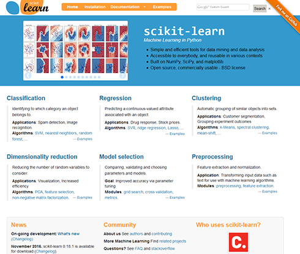

scikit-learn¶
scikit-learn中包含许多著名的机器学习算法和数据处理工具。

导入numpy,matplotlib
[1]:
import numpy as np
import matplotlib.pyplot as plt
%matplotlib inline
Iris数据¶
在此，使用scikit-learn附带的Iris数据，该数据包含鸢尾花特征值和标签信息。
如下读取Iris数据。
[2]:
from sklearn import datasets
iris = datasets.load_iris()
Iris成员变量DESCR的相关定义:
[3]:
print(iris.DESCR)
.. _iris_dataset:
Iris plants dataset
--------------------
**Data Set Characteristics:**
:Number of Instances: 150 (50 in each of three classes)
:Number of Attributes: 4 numeric, predictive attributes and the class
:Attribute Information:
- sepal length in cm
- sepal width in cm
- petal length in cm
- petal width in cm
- class:
- Iris-Setosa
- Iris-Versicolour
- Iris-Virginica
:Summary Statistics:
============== ==== ==== ======= ===== ====================
Min Max Mean SD Class Correlation
============== ==== ==== ======= ===== ====================
sepal length: 4.3 7.9 5.84 0.83 0.7826
sepal width: 2.0 4.4 3.05 0.43 -0.4194
petal length: 1.0 6.9 3.76 1.76 0.9490 (high!)
petal width: 0.1 2.5 1.20 0.76 0.9565 (high!)
============== ==== ==== ======= ===== ====================
:Missing Attribute Values: None
:Class Distribution: 33.3% for each of 3 classes.
:Creator: R.A. Fisher
:Donor: Michael Marshall (MARSHALL%PLU@io.arc.nasa.gov)
:Date: July, 1988
The famous Iris database, first used by Sir R.A. Fisher. The dataset is taken
from Fisher's paper. Note that it's the same as in R, but not as in the UCI
Machine Learning Repository, which has two wrong data points.
This is perhaps the best known database to be found in the
pattern recognition literature. Fisher's paper is a classic in the field and
is referenced frequently to this day. (See Duda & Hart, for example.) The
data set contains 3 classes of 50 instances each, where each class refers to a
type of iris plant. One class is linearly separable from the other 2; the
latter are NOT linearly separable from each other.
.. topic:: References
- Fisher, R.A. "The use of multiple measurements in taxonomic problems"
Annual Eugenics, 7, Part II, 179-188 (1936); also in "Contributions to
Mathematical Statistics" (John Wiley, NY, 1950).
- Duda, R.O., & Hart, P.E. (1973) Pattern Classification and Scene Analysis.
(Q327.D83) John Wiley & Sons. ISBN 0-471-22361-1. See page 218.
- Dasarathy, B.V. (1980) "Nosing Around the Neighborhood: A New System
Structure and Classification Rule for Recognition in Partially Exposed
Environments". IEEE Transactions on Pattern Analysis and Machine
Intelligence, Vol. PAMI-2, No. 1, 67-71.
- Gates, G.W. (1972) "The Reduced Nearest Neighbor Rule". IEEE Transactions
on Information Theory, May 1972, 431-433.
- See also: 1988 MLC Proceedings, 54-64. Cheeseman et al"s AUTOCLASS II
conceptual clustering system finds 3 classes in the data.
- Many, many more ...
翻译如下:
数据特征:
:样本数: 150(每类50)
:属性数: 数值4、类别1
:属性信息:
- 花萼长度
- 花萼宽度
- 花瓣长度
- 花瓣长度
- 类别 (Setosa，Versicolour，Verginica)
类别是花朵的分类标签。实际数据如下:
[4]:
iris.data[:10, :]
[4]:
array([[5.1, 3.5, 1.4, 0.2],
[4.9, 3. , 1.4, 0.2],
[4.7, 3.2, 1.3, 0.2],
[4.6, 3.1, 1.5, 0.2],
[5. , 3.6, 1.4, 0.2],
[5.4, 3.9, 1.7, 0.4],
[4.6, 3.4, 1.4, 0.3],
[5. , 3.4, 1.5, 0.2],
[4.4, 2.9, 1.4, 0.2],
[4.9, 3.1, 1.5, 0.1]])
特征量存于变量data中。每行对应一个样本。显示前10行数据。
标签值：
[5]:
iris.target
[5]:
array([0, 0, 0, 0, 0, 0, 0, 0, 0, 0, 0, 0, 0, 0, 0, 0, 0, 0, 0, 0, 0, 0,
0, 0, 0, 0, 0, 0, 0, 0, 0, 0, 0, 0, 0, 0, 0, 0, 0, 0, 0, 0, 0, 0,
0, 0, 0, 0, 0, 0, 1, 1, 1, 1, 1, 1, 1, 1, 1, 1, 1, 1, 1, 1, 1, 1,
1, 1, 1, 1, 1, 1, 1, 1, 1, 1, 1, 1, 1, 1, 1, 1, 1, 1, 1, 1, 1, 1,
1, 1, 1, 1, 1, 1, 1, 1, 1, 1, 1, 1, 2, 2, 2, 2, 2, 2, 2, 2, 2, 2,
2, 2, 2, 2, 2, 2, 2, 2, 2, 2, 2, 2, 2, 2, 2, 2, 2, 2, 2, 2, 2, 2,
2, 2, 2, 2, 2, 2, 2, 2, 2, 2, 2, 2, 2, 2, 2, 2, 2, 2])
标签信息存于target中。
[ ]:
监督学习（Supervised learning）¶
利用一组已知类别的样本调整分类器的参数，使其达到所要求性能的过程，称为监督训练或有教师学习。 监督学习是从标记的训练数据来推断一个功能的机器学习任务。
具体到上述的Iris数据中，就是利用花的尺寸、类属的训练数据，训练出理想模型。
监督学习有2个主要的任务，回归和分类。
回归： 预测连续的、具体的数值。比如，通过人的身高来预测体重。
分类： 对各种事物分门别类，用于离散型预测。Iris数据的类属标签属于此类。
线性回归¶
线性回归是一种使用线性函数近似数据分布的方法。下面是Iris数据的索引0、索引2，即花萼长度和花瓣长度两个特征量的分布情况。
[6]:
x = iris.data[:, 0]
y = iris.data[:, 2]
plt.scatter(x, y)
[6]:
<matplotlib.collections.PathCollection at 0x7f3d37e1bda0>
使用该数据进行线性回归处理。
[7]:
from sklearn import linear_model
model = linear_model.LinearRegression()
model.fit(iris.data[:, 0].reshape(-1, 1), iris.data[:, 2])
[7]:
LinearRegression(copy_X=True, fit_intercept=True, n_jobs=None,
normalize=False)
[8]:
xmin = x.min()
xmax = x.max()
def f(t): return model.coef_[0] * t + model.intercept_
plt.plot([xmin, xmax], [f(xmin), f(xmax)])
plt.scatter(x, y)
[8]:
<matplotlib.collections.PathCollection at 0x7f3d378e1dd8>
model.coef是系数，model.intercept是截距。直线的公式为:: y ＝ ax + b， a对应于model.coef[0]，b对应于model.intercept。
通常，特征值(在这种情况下为x)是多维的，因此使用向量a，y = a·x + b(点积)，因此coef是一个数组。
利用该训练模型，预测新的数据。如，预测花瓣长度6.5厘米花瓣长度时的花萼长度。
[9]:
model.predict(np.array([6.5]).reshape(1, 1))
[9]:
array([4.97837099])
预测结果：约为4.98厘米。
支持向量机（Support vector machine:SVM）¶
分析萼片宽度和花瓣宽度之间的关系。
[10]:
training_data = iris.data[:, [1, 3]]
target = iris.target
for i, color in enumerate("rgb"):
plt.scatter(training_data[target == i, 0],
training_data[target == i, 1], color=color)
此处使用了支持向量机（SVM）算法来进行分类。
[11]:
from sklearn import svm
model = svm.SVC()
model.fit(training_data, target)
/root/anaconda3/envs/ml-dev/lib/python3.5/site-packages/sklearn/svm/base.py:196: FutureWarning: The default value of gamma will change from 'auto' to 'scale' in version 0.22 to account better for unscaled features. Set gamma explicitly to 'auto' or 'scale' to avoid this warning.
"avoid this warning.", FutureWarning)
[11]:
SVC(C=1.0, cache_size=200, class_weight=None, coef0=0.0,
decision_function_shape='ovr', degree=3, gamma='auto_deprecated',
kernel='rbf', max_iter=-1, probability=False, random_state=None,
shrinking=True, tol=0.001, verbose=False)
利用获得的学习模型在平面坐标上进行颜色标识。
[12]:
xmin = training_data[:, 0].min()
xmax = training_data[:, 0].max()
ymin = training_data[:, 1].min()
ymax = training_data[:, 1].max()
xs = np.linspace(xmin - 0.1, xmax + 0.1, 300)
ys = np.linspace(ymin - 0.1, ymax + 0.1, 300)
xmesh, ymesh = np.meshgrid(xs, ys)
plt.contourf(xmesh, ymesh, model.predict(np.c_[xmesh.ravel(), ymesh.ravel()]).reshape(xmesh.shape),
levels=[-0.5, 0.5, 1.5, 2.5, 3.5], colors=["r", "g", "b"])
for i, color in zip(range(3), "rgb"):
plt.scatter(training_data[target == i, 0],
training_data[target == i, 1], color=color, linewidth=1, edgecolor="k", marker="o")
用不同的颜色来表示分类结果，数据用相应颜色的圆圈表示，绿色部分中有4个蓝色点，蓝色部分中有1个绿色点，大体上做到了正确分类。
评价监督学习¶
看了回归和分类的示例。如何判断训练后的模型是否有效？
算法的有效性是通过预测未知数据的精确程度来评价的。将初始数据集（initial dataset）分为训练集（training dataset）和测试集（test dataset）两部分。训练集用于模型的训练，测试集进行性能的评价，这种方法称为holdout验证(Hold-out Validation)
sciScikit-learn中，提取测试数据的函数如下：
[13]:
from sklearn import model_selection
X_train, X_test, y_train, y_test = model_selection.train_test_split(
iris.data, iris.target, test_size=0.2, random_state=0)
X_train.shape, y_train.shape, X_test.shape, y_test.shape
[13]:
((120, 4), (120,), (30, 4), (30,))
分割测试数据与训练数据。train_test_split函数中的test_size参数指定测试数据与整体的比率，random_state是随机数种子(保证随机时的可重复确认性)。训练数据是x_train、y_train，测试数据是x_test、y_test。使用4个特征量，进行支持向量机监督学习。
[14]:
model = svm.SVC()
model.fit(X_train, y_train)
/root/anaconda3/envs/ml-dev/lib/python3.5/site-packages/sklearn/svm/base.py:196: FutureWarning: The default value of gamma will change from 'auto' to 'scale' in version 0.22 to account better for unscaled features. Set gamma explicitly to 'auto' or 'scale' to avoid this warning.
"avoid this warning.", FutureWarning)
[14]:
SVC(C=1.0, cache_size=200, class_weight=None, coef0=0.0,
decision_function_shape='ovr', degree=3, gamma='auto_deprecated',
kernel='rbf', max_iter=-1, probability=False, random_state=None,
shrinking=True, tol=0.001, verbose=False)
使用score，得出该学习模型的得分结果。
[15]:
model.score(X_test, y_test)
[15]:
1.0
数字1.0表示预测全部正确。这是因为数据简单的原因，通常是不现实的。 上面的SVC中的参数C，是规定学习中行为的。这种定义后在学习过程中不可变的参数称为超参数。通常应通过实验来确定该参数的设值，holdout验证方法，有时会出现过拟合(Overfitting)现象，而使用交叉验证的方法。
k-fold cross_validation，无放回（without replacement）地将训练集分为 k folds（k个部分），其中的 k-1 folds 用于模型的训练，1 fold 用于测试。将这一过程重复k次，可获得k个模型及其性能评价。
我们然后计算基于不同的、独立的folds的模型（s）的平均性能，显见该性能将与holdout method相比，对training set的划分较不敏感。一旦找到了令人满意的超参的值，我们将在整个训练集上进行模型的训练。
因为k-fold cross-validation 是无放回的重采样技术，这种方法的优势在于每一个采样数据仅只成为训练或测试集一部分一次，这将产生关于模型性能的评价，比hold-out方法较低的variance。
Scikit-learn中也有交叉验证功能。以下是其用法示例：
[16]:
model = svm.SVC()
交叉验证函数cross_val_score中，参数cv表示分割数。执行指定cv次数的评估，返回值是cv个元素的数组。比较数组内容与均值。
无监督学习(Unsupervised learning)¶
无监督学习本质上是一个统计手段，在没有标签的数据里可以发现潜在的一些结构的一种训练方式。
它主要具备3个特点：
无监督学习没有明确的目的
无监督学习不需要给数据打标签
无监督学习无法量化效果
无监督学习的典型算法有聚类、降维。
K-Means法¶
K均值聚类就是制定分组的数量为K，自动进行分组。
步骤如下：
定义K个重心。一开始这些重心是随机的（也有一些更加有效的用于初始化重心的算法）
寻找最近的重心并且更新聚类分配。将每个数据点都分配给这K个聚类中的一个。每个数据点都被分配给离它们最近的重心的聚类。这里的「接近程度」的度量是一个超参数——通常是欧几里得距离（Euclidean distance）。
将重心移动到它们的聚类的中心。每个聚类的重心的新位置是通过计算该聚类中所有数据点的平均位置得到的。
重复2和3，直到每次迭代时重心的位置不再显著变化（即直到该算法收敛）。
使用花萼宽度与と花瓣宽度，进行聚类处理。
[17]:
from sklearn import cluster
training_data = iris.data[:, [1, 2]]
model = cluster.KMeans(n_clusters=4)
model.fit(training_data)
[17]:
KMeans(algorithm='auto', copy_x=True, init='k-means++', max_iter=300,
n_clusters=4, n_init=10, n_jobs=None, precompute_distances='auto',
random_state=None, tol=0.0001, verbose=0)
指定n_cluster为4。结果存于变量labels。
[18]:
model.labels_
[18]:
array([0, 0, 0, 0, 0, 0, 0, 0, 0, 0, 0, 0, 0, 0, 0, 0, 0, 0, 0, 0, 0, 0,
0, 0, 0, 0, 0, 0, 0, 0, 0, 0, 0, 0, 0, 0, 0, 0, 0, 0, 0, 0, 0, 0,
0, 0, 0, 0, 0, 0, 1, 1, 1, 3, 1, 1, 1, 3, 1, 3, 3, 3, 3, 1, 3, 1,
1, 3, 3, 3, 1, 3, 1, 1, 3, 1, 1, 1, 1, 3, 3, 3, 3, 1, 1, 1, 1, 3,
3, 3, 3, 1, 3, 3, 3, 3, 3, 3, 3, 3, 2, 1, 2, 2, 2, 2, 1, 2, 2, 2,
1, 1, 2, 1, 1, 1, 2, 2, 2, 1, 2, 1, 2, 1, 2, 2, 1, 1, 2, 2, 2, 2,
2, 1, 2, 2, 2, 2, 1, 2, 2, 1, 1, 2, 2, 1, 1, 1, 2, 1], dtype=int32)
以不同的颜色显示结果。
[19]:
for i, c in enumerate("rgbc"):
data = training_data[model.labels_ == i, :]
plt.scatter(data[:, 0], data[:, 1], color=c)
大致看来，左上和底部有两个群集，但由于群集数量指定为4，因此左上群集又被分为三个。请注意，这是无监督学习，它不提供有关Iris分类的信息，仅从点的位置关系中找出聚类。
降维¶
使用PCA方法(主成分分析)将Iris数据压缩为二维。
Iris数据有四个特征量，目前为止，都是选择了其中两个在平面上表示。把多元的数据在平面上投影的方法有很多，在PCA中，自动选择点序列投影。这在多维数据可视化时非常方便。
执行结果如下：
[20]:
from sklearn import decomposition
model = decomposition.PCA(n_components=2)
model.fit(iris.data)
[20]:
PCA(copy=True, iterated_power='auto', n_components=2, random_state=None,
svd_solver='auto', tol=0.0, whiten=False)
参数n_components表示压缩后的维数。在此指定2是因为我们要将其压缩为2维。 结束学习，使用训练后的模型实际执行降维处理。
[21]:
compressed = model.transform(iris.data)
变量compressed是现压缩数据。进行平面可视化处理。根据Iris类型添制颜色。
[22]:
for i, c in enumerate("rgb"):
plt.scatter(compressed[iris.target == i, 0],
compressed[iris.target == i, 1], color=c)
和支持向量机相比，看起来绿点和红点变宽了。
## scikit-learn原始文档可以作为教科书使用
在监督学习中，使用了线性回归和支持向量机，在无监督学习中，利用了K-Means方法和PCA 这只是scikit-learn众多算法之一，在同一任务也有多种算法的选择。
scikit-learn的特征之一。就是提供了一个统一的调用接口。
用模拟代码来表示如下：
监督学习:
model = SomeAlgorithm() ＃实例化实现某种算法的类
model.fit(data，target) ＃通过输入特征量和目标来学习
pred = model.predict(other_data) ＃预测其他数据
无监督学习:
model = SomeAlgorithm() ＃实例化实现某种算法的类
model.fit(data) ＃通过仅输入特征来学习
->, 或是通过查看变量检查结果，或是降维使用transform进行变换。
scikit-learn中的Iris数据。由于数据量小，在任何算法中都是瞬间完成的。但对于大量数据，有些算法并不适用。 各种应用场景，数据与算法的使用，建议参考[Choosing the right estimator](https://scikit-learn.org/stable/tutorial/machine_learning_map/index.html)。
在scikit-learn的文档中不仅有类和函数的解释，还有算法、机器学习概念的说明，可以作为教科书使用，值得深入学习。